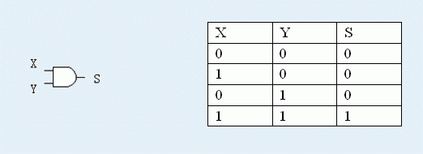
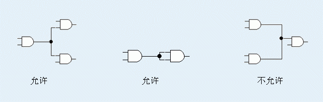
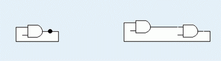
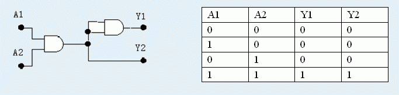

W教授在T大学计算机系里开了一门“数字逻辑”课，主要讲授如何设计逻辑电路。这一天，W教授布置了一个实验：设计并实现一个4端输入、4端输出的逻辑译码电路。设计这样的电路原本并不困难，但是，教授给出了如下的要求：
1．只允许使用2端输入、1端输出的门电路作为实现电路的组件，而且可用门电路的种类和数目都已给定；
2．使用最少数目的门电路。
这两个要求难倒了全系的同学，于是，Q同学找到了正在参加CTSC（中国队选拔赛）的你，希望你能帮忙编写一个程序，自动找出符合要求的连接方式。
在数字逻辑中，所有信号都可以看作只有两个值：“高电平”和“低电平”，分别用“1”和“0”来表示。
一个门电路元件的特性由其输入/输出功能表唯一给出，所谓功能表，就是输入信号电平与输出信号电平之间的关系表。比如，“与门”的符号和功能表如下图所示：

上图中，如果“与门”的两个输入端X和Y都是高电平“1”，则输出端S也是高电平“1”，否则，输出端S是低电平“0”。
假定，本次实验提供的门电路都具有输入对称性，即交换两个输入端的信号，输出不变。但是，如果门电路的输入端悬空（即没有加输入信号），则输出无意义。
在连接电路的过程中，一个门电路的输出端可以将信号送到其他多个元件的输入端；而门电路的一个输入端则只能接收来自一个输出端的信号。如下图所示：

另外，规定信号必须单向传输，即一个门电路的输出不能直接或间接通过其他门电路回到同一门电路的输入端。如下图所示即为两种不允许的连接方式：

要求你设计的译码电路是一个有四个输入端和四个输出端的逻辑电路，该译码电路的输入和输出关系通过功能表给出，即给出每种输入组合下的四个输出端的情况。显然，一共有 2^4=16种输入组合。比如，一个由前述“与门”构成的2输入，2输出的简单译码电路如下图所示（其中，A1, A2是输入端，Y1, Y2是输出端）：
